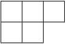
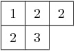
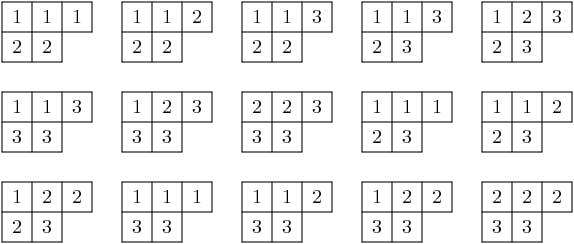
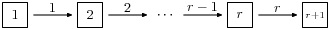
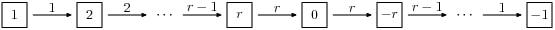
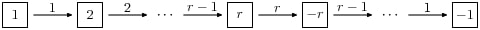
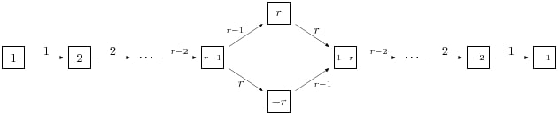
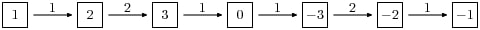

Classical Crystals¶
A classical crystal is one coming from the finite (classical) types \(A_r, B_r, C_r, D_r, E_{6,7,8}, F_4\), and \(G_2\). Here we describe some background before going into the general theory of crystals and the type dependent combinatorics.
Tableaux and representations of \(GL(n)\)¶
Let \(\lambda\) be a partition. The Young diagram of \(\lambda\) is the array of boxes having \(\lambda_i\) boxes in the \(i\)-th row, left adjusted. Thus if \(\lambda = (3, 2)\) the diagram is:
{kind=link}
A semi-standard Young tableau of shape \(\lambda\) is a filling of the box by integers in which the rows are weakly increasing and the columns are strictly increasing. Thus
{kind=link}
is a semistandard Young tableau. Sage has a Tableau class,
and you may create this tableau as follows:
sage: T = Tableau([[1,2,2], [2,3]]); T
[[1, 2, 2], [2, 3]]
A partition of length \(\le r+1\) is a dominant weight for \(GL(r+1, \mathbf{C})\) according to the description of the ambient space in Standard realizations of the ambient spaces. Therefore it corresponds to an irreducible representation \(\pi_\lambda = \pi_\lambda^{GL(r+1)}\) of \(GL(r+1, \mathbf{C})\).
It is true that not every dominant weight \(\lambda\) is a partition, since a dominant weight might have some values \(\lambda_i\) negative. The dominant weight \(\lambda\) is a partition if and only if the character of \(\lambda\) is a polynomial as a function on the space \(\hbox{Mat}_n(\mathbf{C})\). Thus for example \(\det^{-1} = \pi_\lambda\) with \(\lambda = (-1, \dots, -1)\), which is a dominant weight but not a partition, and the character is not a polynomial function on \(\hbox{Mat}_n(\mathbf{C})\).
Theorem [Littlewood] If \(\lambda\) is a partition, then the number of semi-standard Young tableaux with shape \(\lambda\) and entries in \(\{1,2,\ldots,r+1\}\) is the dimension of \(\pi_\lambda\).
For example, if \(\lambda = (3,2)\) and \(r = 2\), then we find 15 tableaux with shape \(\lambda\) and entries in \(\{1,2,3\}\):
{kind=link}
This is consistent with the theorem since the dimension of the irreducible representation of \(GL(3)\) with highest weight \((3,2,0)\) has dimension 15:
sage: A2 = WeylCharacterRing("A2")
sage: A2(3,2,0).degree()
15
In fact we may obtain the character of the representation from the set of tableaux. Indeed, one of the definitions of the Schur polynomial (due to Littlewood) is the following combinatorial one. If \(T\) is a tableaux, define the weight of \(T\) to be \(\hbox{wt}(T) = (k_1,\dots,k_n)\) where \(k_i\) is the number of \(i\)‘s in the tableaux. Then the multiplicity of \(\mu\) in the character \(\chi_\lambda\) is the number of tableaux of weight \(\lambda\). Thus if \(\mathbf{z} = (z_1,\dots,z_n)\), we have
where the sum is over all semi-standard Young tableaux of shape \(\lambda\) that have entries in \(\{1, 2, \ldots, r+1\}\).
Frobenius-Schur Duality¶
Frobenius-Schur duality is a relationship between the representation theories of the symmetric group and general linear group. We will relate this to tableaux in the next section.
Representations of the symmetric group \(S_k\) are parametrized by partitions \(\lambda\) of \(k\). The parametrization may be characterized as follows. Let \(n\) be any integer \(\ge k\). Then both \(GL(n,\mathbf{C})\) and \(S_k\) act on \(\otimes^k V\) where \(V = \mathbf{C}^n\). Indeed, \(GL(n)\) acts on each \(V\) and \(S_k\) permutes them. Then if \(\pi_\lambda^{GL(n)}\) is the representation of \(GL(n,\mathbf{C})\) with highest weight vector \(\lambda\) and \(\pi_\lambda^{S_k}\) is the irreducible representation of \(S_k\) parametrized by \(\lambda\) then
as bimodules for the two groups. This is Frobenius-Schur duality and it serves to characterize the parametrization of the irreducible representations of \(S_k\) by partitions of \(k\).
Counting pairs of tableaux¶
In both the representation theory of \(GL(n)\) and the representation theory of \(S_k\), the degrees of irreducible representations can be expressed in terms of the number of tableaux of the appropriate type. We have already stated the theorem for \(GL(n)\). For \(S_k\), it goes as follows.
Let us say that a semistandard Young tableau \(T\) of shape \(\lambda\vdash k\) is standard if \(T\) contains each entry \(1,2,\dots,k\) exactly once. Thus both rows and columns are strictly increasing.
Theorem [Young, 1927] The degree of \(\pi_\lambda\) is the number of standard tableaux of shape \(\lambda\).
Now let us consider the implications of Frobenius-Schur duality. The dimension of \(\otimes^k V\) is \(n^k\). Therefore \(n^k\) is equal to the number of pairs \((T1,T2)\) of tableaux of the same shape \(\lambda\vdash k\), where the first tableaux is standard (in the alphabet \(1,2,\ldots,k\)), and the second the second semistandard (in the alphabet \(1,2,\ldots,n\)).
The Robinson-Schensted-Knuth correspondence¶
The last purely combinatorial statement has a combinatorial proof, based on the Robinson-Schensted-Knuth (RSK) correspondence.
References:
- [Knuth1998], section “Tableaux and Involutions”.
- [Knuth1970]
- [Fulton1997]
- [Stanley1999]
The RSK correspondence gives bijections between
pairs of tableaux of various types and combinatorial objects of
different types. We will not review the correspondence in detail here,
but see the references. We note that Schensted insertion is
implemented as the method schensted_insertion of Tableau class in
Sage.
Thus we have the following bijections:
- Pairs of tableaux \(T_1\) and \(T_2\) of shape \(\lambda\) where \(\lambda\) runs through the partitions of \(k\) such that \(T_1\) is a standard tableau and \(T_2\) is a semistandard tableau in \(1,2,\dots,n\) are in bijection with the \(n^k\) words of length \(k\) in \(1,2,\dots,n\).
- Pairs of standard tableaux of the same shape \(\lambda\) as \(\lambda\) runs through the partitions of \(k\) are in bijection with the \(k!\) elements of \(S_k\).
- Pairs of tableaux \(T_1\) and \(T_2\) of the same shape \(\lambda\) but arbitrary size in \(1,2,3,\dots,n\) are in bijection with \(n \times n\) positive integer matrices.
- Pairs of tableaux \(T_1\) and \(T_2\) of conjugate shapes \(\lambda\) and \(\lambda'\) are in bijection with \(n \times n\) matrices with entries \(0\) or \(1\).
The second of these four bijection gives a combinatorial proof of the fact explained above, that the number of pairs \((T1,T2)\) of tableaux of the same shape \(\lambda\vdash k\), where the first tableaux is standard (in the alphabet \(1,2,\cdots,k\)), and the second the second semistandard (in the alphabet \(1,2,\cdots,n\)). So this second bijection is a combinatorial analog of Frobenius-Schur duality.
Analogies between representation theory and combinatorics¶
The four combinatorial bijections (variants of RSK) cited above have the following analogs in representation theory.
- The first combinatorial fact corresponds to Frobenius-Schur duality, as we have already explained.
- The second combinatorial fact also has an analog in representation theory. The group algebra \(\mathbf{C}[S_k]\) is an \(S_k \times S_k\) bimodule with of dimension \(k!\). It decomposes as a direct sum of \(\pi_\lambda^{S_k} \otimes \pi_\lambda^{S_k}\).
Both the combinatorial fact and the decomposition of \(\mathbf{C}[S_k]\) show that the number of pairs of standard tableaux of size \(k\) and the same shape equals \(k!\).
- The third combinatorial fact is analogous to the decomposition of the ring of polynomial functions on \(\hbox{Mat}(n, \mathbf{C})\) on which \(GL(n, \mathbf{C}) \times GL(n, \mathbf{C})\) acts by \((g_1, g_2)f(X) = f({^t g_1}X g_2)\). The polynomial ring decomposes into the direct sum of \(\pi^{GL(n)}_\lambda \otimes \pi^{GL(n)}_\lambda\).
Taking traces gives the Cauchy identity:
where \(x_i\) are the eigenvalues of \(g_1\) and \(y_j\) are the eigenvalues of \(g_2\). The sum is over all partitions \(\lambda\).
- The last combinatorial fact is analogous to the decomposition of the exterior algebra over \(\hbox{Mat}(n, \mathbf{C})\).
Taking traces gives the dual Cauchy identity:
Again the sum is over partitions \(\lambda\) and here \(\lambda'\) is the conjugate partition.
Interpolating between representation theory and combinatorics¶
The theory of quantum groups interpolates between the representation theoretic picture and the combinatorial picture, and thereby explains these analogies. The representation \(\pi_\lambda^{GL(n)}\) is reinterpreted as a module for the quantized enveloping algebra \(U_q(\mathfrak{gl}_n(\mathbf{C}))\), and the representation \(\pi_\lambda^{S_k}\) is reinterpreted as a module for the Iwahori Hecke algebra. Then Frobenius-Schur duality persists. See [Jimbo1986]. When \(q \to 1\), we recover the representation story. When \(q \to 0\), we recover the combinatorial story.
Kashiwara crystals¶
References:
Kashiwara considered the highest weight modules of quantized enveloping algebras \(U_q(\mathfrak{g})\) in the limit when \(q \to 0\). The enveloping algebra cannot be defined when \(q = 0\), but a limiting structure can still be detected. This is the crystal basis of the module.
Kashiwara’s crystal bases have a combinatorial structure that sheds light even on purely combinatorial constructions on tableaux that predated quantum groups. It gives a good generalization to other Cartan types (or more generally to Kac-Moody algebras).
Let \(\Lambda\) be the weight lattice of a Cartan type with root system \(\Phi\). We now define a crystal of type \(\Phi\). Let \(\mathcal{B}\) be a set, and let \(0 \notin \mathcal{B}\) be an auxiliary element. For each index \(1 \le i \le r\) we assume there given maps \(e_i, f_i : \mathcal{B} \longrightarrow \mathcal{B} \cup \{0\}\), maps \(\varepsilon_i, \varphi_i : \mathcal{B} \longrightarrow \mathbf{Z}\) and a map \(\hbox{wt} : \mathcal{B} \longrightarrow \Lambda\) satisfying certain assumptions, which we now describe. It is assumed that if \(x, y \in \mathcal{B}\) then \(e_i (x) = y\) if and only if \(f_i (y) = x\). In this case, it is assumed that
Moreover, we assume that
for all \(x \in \mathcal{B}\).
We call a crystal regular if it satisfies the additional assumption that \(\varepsilon_i(v)\) is the number of times that \(e_i\) may be applied to \(v\), and that \(\phi_i(v)\) is the number of times that \(f_i\) may be applied. That is, \(\varphi_i (x) = \max \{k | f_i^k x \neq 0\}\) and \(\varepsilon_i (x) = \max \{k | e_i^k (x) \neq 0\}\). Kashiwara also allows \(\varepsilon_i\) and \(\varphi_i\) to take the value \(-\infty\).
Note
Most of the crystals that we are concerned with here are regular.
Given the crystal \(\mathcal{B}\), the character \(\chi_{\mathcal{B}}\) is:
Given any highest weight \(\lambda\), constructions of Kashiwara and Nakashima, Littelmann and others produce a crystal \(\chi_{\mathcal{B}_\lambda}\) such that \(\chi_{\mathcal{B}_\lambda} = \chi_\lambda\), where \(\chi_\lambda\) is the irreducible character with highest weight \(\lambda\), as in Representations and characters.
The crystal \(\mathcal{B}_\lambda\) is not uniquely characterized by the properties that we have stated so far. For Cartan types \(A, D, E\) (more generally, any simply-laced type) it may be characterized by these properties together with certain other Stembridge axioms. We will take it for granted that there is a unique “correct” crystal \(\mathcal{B}_\lambda\) and discuss how these are constructed in Sage.
Installing dot2tex¶
Before giving examples of crystals, we digress to help you install
dot2tex, which you will need in order to make latex images of
crystals.
dot2tex is an optional package of sage and the latest version
can be installed via:
sage -i dot2tex
Crystals of tableaux in Sage¶
All crystals that are currently in Sage can be accessed by crystals.<tab>.
For type \(A_r\), Kashiwara and Nakashima put a crystal structure on the set of tableaux with shape \(\lambda\) in \(1, 2, \ldots, r+1\), and this is a realization of \(\mathcal{B}_{\lambda}\). Moreover, this construction extends to other Cartan types, as we will explain. At the moment, we will consider how to draw pictures of these crystals.
Once you have dot2tex installed, you may make images pictures of crystals
with a command such as this:
sage: crystals.Tableaux("A2", shape=[2,1]).latex_file("/tmp/a2rho.tex") # optional - dot2tex graphviz
Here \(\lambda = (2,1)=(2,1,0)\). The crystal C is
\(\mathcal{B}_{\lambda}\). The character \(\chi_\lambda\) will therefore
be the eight-dimensional irreducible character with this highest
weight. Then you may run pdflatex on the file a2rho.tex.
This can also be achieved without the detour of saving the latex file via:
sage: B = crystals.Tableaux(['A',2], shape=[2,1])
sage: view(B, tightpage=True) # optional - dot2tex graphviz, not tested (opens external window)
This produces the crystal graph:

You may also wish to color the edges in different colors by specifying further latex options:
sage: B = crystals.Tableaux(['A',2], shape=[2,1])
sage: G = B.digraph()
sage: G.set_latex_options(color_by_label = {1:"red", 2:"yellow"})
sage: view(G, tightpage=True) # optional - dot2tex graphviz, not tested (opens external window)
As you can see, the elements of this crystal are exactly the eight tableaux of shape \(\lambda\) with entries in \(\{1,2,3\}\). The convention is that if \(x,y \in \mathcal{B}\) and \(f_i(x) = y\), or equivalently \(e_i(y) = x\), then we draw an arrow from \(x \to y\). Thus the highest weight tableau is the one with no incoming arrows. Indeed, this is:
{kind=link}
We recall that the weight of the tableau is \((k_1,k_2,k_3)\) where \(k_i\) is the number of \(i\)‘s in the tableau, so this tableau has weight \((2,1,0)\), which indeed equals \(\lambda\).
Once the crystal is created, you have access to the ambient space and
its methods through the method weight_lattice_realization():
sage: C = crystals.Tableaux("A2", shape=[2,1])
sage: L = C.weight_lattice_realization(); L
Ambient space of the Root system of type ['A', 2]
sage: L.fundamental_weights()
Finite family {1: (1, 0, 0), 2: (1, 1, 0)}
The highest weight vector is available as follows:
sage: C = crystals.Tableaux("A2", shape=[2,1])
sage: v = C.highest_weight_vector(); v
[[1, 1], [2]]
or more simply:
sage: C = crystals.Tableaux("A2", shape=[2,1])
sage: C[0]
[[1, 1], [2]]
Now we may apply the operators \(e_i\) and \(f_i\) to move around in the crystal:
sage: C = crystals.Tableaux("A2", shape=[2,1])
sage: v = C.highest_weight_vector()
sage: v.f(1)
[[1, 2], [2]]
sage: v.f(1).f(1)
sage: v.f(1).f(1) is None
True
sage: v.f(1).f(2)
[[1, 3], [2]]
sage: v.f(1).f(2).f(2)
[[1, 3], [3]]
sage: v.f(1).f(2).f(2).f(1)
[[2, 3], [3]]
sage: v.f(1).f(2).f(2).f(1) == v.f(2).f(1).f(1).f(2)
True
You can construct the character if you first make a Weyl character ring:
sage: A2 = WeylCharacterRing("A2")
sage: C = crystals.Tableaux("A2", shape=[2,1])
sage: C.character(A2)
A2(2,1,0)
Crystals of letters¶
For each of the classical Cartan types there is a standard crystal \(\mathcal{B}_{\hbox{standard}}\) from which other crystals can be built up by taking tensor products and extracting constituent irreducible crystals. This procedure is sufficient for Cartan types \(A_r\) and \(C_r\). For types \(B_r\) and \(D_r\) the standard crystal must be supplemented with spin crystals. See [KashiwaraNakashima1994] or [HongKang2002] for further details.
Here is the standard crystal of type \(A_r\).
{kind=link}
You may create the crystal and work with it as follows:
sage: C = crystals.Letters("A6")
sage: v0 = C.highest_weight_vector(); v0
1
sage: v0.f(1)
2
sage: v0.f(1).f(2)
3
sage: [v0.f(1).f(2).f(x) for x in [1..6]]
[None, None, 4, None, None, None]
sage: [v0.f(1).f(2).e(x) for x in [1..6]]
[None, 2, None, None, None, None]
Here is the standard crystal of type \(B_r\).
{kind=link}
There is, additionally, a spin crystal for \(B_r\), corresponding to
the \(2^r\)-dimensional spin representation. We will not draw it, but
we will describe it. Its elements are vectors
\(\epsilon_1\otimes\cdots\otimes\epsilon_r\), where each spin
\(\epsilon_i=\pm\).
If \(i<r\), then the effect of the operator \(f_i\) is to annihilate \(v = \epsilon_1 \otimes \cdots \otimes \epsilon_r\) unless \(\epsilon_i \otimes \epsilon_{i+1} = + \otimes -\). If this is so, then \(f_i(v)\) is obtained from \(v\) by replacing \(\epsilon_i \otimes \epsilon_{i+1}\) by \(- \otimes +\). If \(i=r\), then \(f_r\) annihilates \(v\) unless \(\epsilon_r=+\), in which case it replaces \(\epsilon_r\) by \(-\).
Create the spin crystal as follows. The crystal elements are represented in the signature representation listing the \(\epsilon_i\):
sage: C = crystals.Spins("B3")
sage: C.list()
[+++, ++-, +-+, -++, +--, -+-, --+, ---]
Here is the standard crystal of type \(C_r\).
{kind=link}
Here is the standard crystal of type \(D_r\).
{kind=link}
There are two spin crystals for type \(D_r\). Each consists of \(\epsilon_1 \otimes \cdots \otimes \epsilon_r\) with \(\epsilon_i = \pm\), and the number of spins either always even or always odd. We will not describe the effect of the root operators \(f_i\), but you are invited to create them and play around with them to guess the rule:
sage: Cplus = crystals.SpinsPlus("D4")
sage: Cminus = crystals.SpinsMinus("D4")
It is also possible to construct the standard crystal for type \(G_2\), \(E_6\), and \(E_7\). Here is the one for type \(G_2\) (corresponding to the representation of degree 7):
{kind=link}
The crystal of letters is a special case of the crystal of tableaux in the sense that \(\mathcal{B}_{\hbox{standard}}\) is isomorphic to the crystal of tableaux whose highest weight \(\lambda\) is the highest weight vector of the standard representation. Thus compare:
sage: crystals.Letters("A3")
The crystal of letters for type ['A', 3]
sage: crystals.Tableaux("A3", shape=[1])
The crystal of tableaux of type ['A', 3] and shape(s) [[1]]
These two crystals are different in implementation, but they are isomorphic. In fact the second crystal is constructed from the first. We can test isomorphisms between crystals as follows:
sage: Cletter = crystals.Letters(['A',3])
sage: Ctableaux = crystals.Tableaux(['A',3], shape = [1])
sage: Cletter.digraph().is_isomorphic(Ctableaux.digraph())
True
sage: Cletter.digraph().is_isomorphic(Ctableaux.digraph(), certificate = True)
(True, {1: [[1]], 2: [[2]], 3: [[3]], 4: [[4]]})
where in the last step the explicit map between the vertices of the crystals is given.
Crystals of letters have a special role in the theory since they are particularly simple, yet as Kashiwara and Nakashima showed, the crystals of tableaux can be created from them. We will review how this works.
Tensor products of crystals¶
Kashiwara defined the tensor product of crystals in a purely combinatorial way. The beauty of this construction is that it exactly parallels the tensor product of crystals of representations. That is, if \(\lambda\) and \(\mu\) are dominant weights, then \(\mathcal{B}_\lambda \otimes \mathcal{B}_\mu\) is a (usually disconnected) crystal, which may contain multiple copies of \(\mathcal{B}_\nu\) (for another dominant weight \(\nu\)), and the number of copies of \(\mathcal{B}_\nu\) is exactly the multiplicity of \(\chi_\nu\) in \(\chi_\lambda \chi_\mu\).
We will describe two conventions for the tensor product of crystals.
Kashiwara’s definition¶
As a set, the tensor product \(\mathcal{B} \otimes \mathcal{C}\) of crystals \(\mathcal{B}\) and \(\mathcal{C}\) is the Cartesian product, but we denote the ordered pair \((x, y)\) with \(x \in \mathcal{B}\) and \(y \in \mathcal{C}\) by \(x \otimes y\). We define \(\hbox{wt} (x \otimes y) = \hbox{wt} (x) + \hbox{wt}(y)\). We define
and
It is understood that \(x \otimes 0 = 0 \otimes x = 0\). We also define:
Alternative definition¶
As a set, the tensor product \(\mathcal{B} \otimes \mathcal{C}\) of crystals \(\mathcal{B}\) and \(\mathcal{C}\) is the Cartesian product, but we denote the ordered pair \((y, x)\) with \(y \in \mathcal{B}\) and \(x \in \mathcal{C}\) by \(x \otimes y\). We define \(\hbox{wt} (x \otimes y) = \hbox{wt} (y) + \hbox{wt}(x)\). We define
and
It is understood that \(y \otimes 0 = 0 \otimes y = 0\). We also define
The tensor product is associative: \((x \otimes y) \otimes z \mapsto x \otimes(y \otimes z)\) is an isomorphism \((\mathcal{B} \otimes \mathcal{C}) \otimes \mathcal{D} \to \mathcal{B} \otimes (\mathcal{C} \otimes \mathcal{D})\), and so we may consider tensor products of arbitrary numbers of crystals.
The relationship between the two definitions¶
The relationship between the two definitions is simply that the Kashiwara tensor product \(\mathcal{B} \otimes \mathcal{C}\) is the alternate tensor product \(\mathcal{C} \otimes \mathcal{B}\) in reverse order. Sage uses the alternative tensor product. Even though the tensor product construction is a priori asymmetrical, both constructions produce isomorphic crystals, and in particular Sage’s crystals of tableaux are identical to Kashiwara’s.
Note
Using abstract crystals (i.e. they satisfy the axioms but do not arise from a representation of \(U_q(\mathfrak{g})\)), we can construct crystals \(\mathcal{B}, \mathcal{C}\) such that \(\mathcal{B} \otimes \mathcal{C} \neq \mathcal{C} \otimes \mathcal{B}\) (of course, using the same convention).
Tensor products of crystals in Sage¶
You may construct the tensor product of several crystals in Sage using
crystals.TensorProduct:
sage: C = crystals.Letters("A2")
sage: T = crystals.TensorProduct(C,C,C); T
Full tensor product of the crystals [The crystal of letters for type ['A', 2],
The crystal of letters for type ['A', 2], The crystal of letters for type ['A', 2]]
sage: T.cardinality()
27
sage: T.highest_weight_vectors()
([1, 1, 1], [2, 1, 1], [1, 2, 1], [3, 2, 1])
This crystal has four highest weight vectors. We may understand this as follows:
sage: A2 = WeylCharacterRing("A2")
sage: C = crystals.Letters("A2")
sage: T = crystals.TensorProduct(C,C,C)
sage: chi_C = C.character(A2)
sage: chi_T = T.character(A2)
sage: chi_C
A2(1,0,0)
sage: chi_T
A2(1,1,1) + 2*A2(2,1,0) + A2(3,0,0)
sage: chi_T == chi_C^3
True
As expected, the character of T is the cube of the character of
C, and representations with highest weight \((1,1,1)\), \((3,0,0)\)
and \((2,1,0)\). This decomposition is predicted by Frobenius-Schur
duality: the multiplicity of \(\pi_\lambda^{GL(n)}\) in
\(\otimes^3\mathbf{C}^3\) is the degree of \(\pi_\lambda^{S_3}\).
It is useful to be able to select one irreducible constitutent of
T. If we only want one of the irreducible constituents of T,
we can specify a list of highest weight vectors by the option
generators. If the list has only one element, then we get an
irreducible crystal. We can make four such crystals:
sage: A2 = WeylCharacterRing("A2")
sage: C = crystals.Letters("A2")
sage: T = crystals.TensorProduct(C,C,C)
sage: [T1,T2,T3,T4] = \
[crystals.TensorProduct(C,C,C,generators=[v]) for v in T.highest_weight_vectors()]
sage: [B.cardinality() for B in [T1,T2,T3,T4]]
[10, 8, 8, 1]
sage: [B.character(A2) for B in [T1,T2,T3,T4]]
[A2(3,0,0), A2(2,1,0), A2(2,1,0), A2(1,1,1)]
We see that two of these crystals are isomorphic, with character
A2(2,1,0). Try:
sage: A2 = WeylCharacterRing("A2")
sage: C = crystals.Letters("A2")
sage: T = crystals.TensorProduct(C,C,C)
sage: [T1,T2,T3,T4] = \
[crystals.TensorProduct(C,C,C,generators=[v]) for v in T.highest_weight_vectors()]
sage: T1.plot()
Graphics object consisting of 35 graphics primitives
sage: T2.plot()
Graphics object consisting of 25 graphics primitives
sage: T3.plot()
Graphics object consisting of 25 graphics primitives
sage: T4.plot()
Graphics object consisting of 2 graphics primitives
Elements of crystals.TensorProduct(A,B,C, ...) are represented by
sequences [a,b,c, ...] with a in A, b in B, etc.
This of course represents \(a \otimes b \otimes c \otimes \cdots\).
Crystals of tableaux as tensor products of crystals¶
Sage implements the
CrystalOfTableaux as
a subcrystal of a tensor product of the
ClassicalCrystalOfLetters.
You can see how its done as follows:
sage: T = crystals.Tableaux("A4",shape=[3,2])
sage: v = T.highest_weight_vector().f(1).f(2).f(3).f(2).f(1).f(4).f(2).f(3); v
[[1, 2, 5], [3, 4]]
sage: list(v)
[3, 1, 4, 2, 5]
We’ve looked at the internal representation of \(v\), where it is
represented as an element of the fourth tensor power of the
ClassicalCrystalOfLetters.
We see that the tableau:
{kind=link}
is interpreted as the tensor:
{kind=link}
The elements of the tableau are read from bottom to top and from left to right. This is the inverse middle-Eastern reading of the tableau. See Hong and Kang, loc. cit. for discussion of the readings of a tableau.
Spin crystals¶
For the Cartan types \(A_r\), \(C_r\) or \(G_2\),
CrystalOfTableaux are
capable of making any finite crystal. (For type \(A_r\) it is necessary
that the highest weight \(\lambda\) be a partition.)
For Cartan types \(B_r\) and \(D_r\), there also exist spin representations.
The corresponding crystals are implemented as spin crystals.
For these types,
CrystalOfTableaux also allows
the input shape \(\lambda\) to be half-integral if it is of height \(r\).
For example:
sage: C = crystals.Tableaux(['B',2], shape = [3/2, 1/2])
sage: C.list()
[[++, [[1]]], [++, [[2]]], [++, [[0]]], [++, [[-2]]], [++, [[-1]]], [+-, [[-2]]],
[+-, [[-1]]], [-+, [[-1]]], [+-, [[1]]], [+-, [[2]]], [-+, [[2]]], [+-, [[0]]],
[-+, [[0]]], [-+, [[-2]]], [--, [[-2]]], [--, [[-1]]]]
Here the first list of \(+\) and \(-\) gives a spin column that is discussed in more detail
in the next section and the second entry is a crystal of tableau element for
\(\lambda = (\lfloor \lambda_1 \rfloor, \lfloor \lambda_2 \rfloor, \ldots )\).
For type \(D_r\), we have the additional feature that there are two types of spin
crystals. Hence in
CrystalOfTableaux
the \(r\)-th entry of \(\lambda\) in this case can also take negative values:
sage: C = crystals.Tableaux(['D',3], shape = [1/2, 1/2,-1/2])
sage: C.list()
[[++-, []], [+-+, []], [-++, []], [---, []]]
For rank two Cartan types, we also have crystals.FastRankTwo which gives
a different fast implementation of these crystals:
sage: B = crystals.FastRankTwo(['B',2], shape=[3/2,1/2]); B
The fast crystal for B2 with shape [3/2,1/2]
sage: v = B.highest_weight_vector(); v.weight()
(3/2, 1/2)
Type B spin crystal¶
The spin crystal has highest weight \((1/2,\dots,1/2)\). This is the last fundamental weight. The irreducible representation with this weight is the spin representation of degree \(2^r\). Its crystal is hand-coded in Sage:
sage: Cspin = crystals.Spins("B3"); Cspin
The crystal of spins for type ['B', 3]
sage: Cspin.cardinality()
8
The crystals with highest weight \(\lambda\), where \(\lambda\) is a half-integral weight, are constructed as a tensor product of a spin column and the highest weight crystal of the integer part of \(\lambda\). For example, suppose that \(\lambda = (3/2, 3/2, 1/2)\). The corresponding irreducible character will have degree 112:
sage: B3 = WeylCharacterRing("B3")
sage: B3(3/2,3/2,1/2).degree()
112
So \(\mathcal{B}_\lambda\) will have 112 elements. We can find it as a
subcrystal of Cspin \(\otimes \mathcal{B}_\mu\), where
\(\mu = \lambda-(1/2,1/2,1/2) = (1,1,0)\):
sage: B3 = WeylCharacterRing("B3")
sage: B3(1,1,0)*B3(1/2,1/2,1/2)
B3(1/2,1/2,1/2) + B3(3/2,1/2,1/2) + B3(3/2,3/2,1/2)
We see that just taking the tensor product of these two crystals will produce a reducible crystal with three constitutents, and we want to extract the one we want. We do that as follows:
sage: B3 = WeylCharacterRing("B3")
sage: C1 = crystals.Tableaux("B3", shape=[1,1])
sage: Cspin = crystals.Spins("B3")
sage: C = crystals.TensorProduct(C1, Cspin, generators=[[C1[0],Cspin[0]]])
sage: C.cardinality()
112
Alternatively, we can get this directly from
CrystalOfTableaux:
sage: C = crystals.Tableaux(['B',3], shape = [3/2,3/2,1/2])
sage: C.cardinality()
112
This is the desired crystal.
Type D spin crystals¶
A similar situation pertains for type \(D_r\), but now there are two spin crystals, both of degree \(2^{r-1}\). These are hand-coded in sage:
sage: SpinPlus = crystals.SpinsPlus("D4")
sage: SpinMinus = crystals.SpinsMinus("D4")
sage: SpinPlus[0].weight()
(1/2, 1/2, 1/2, 1/2)
sage: SpinMinus[0].weight()
(1/2, 1/2, 1/2, -1/2)
sage: [C.cardinality() for C in [SpinPlus,SpinMinus]]
[8, 8]
Similarly to type B crystal, we obtain crystal with spin weight by allowing for partitions with half-integer values, and the last entry can be negative depending on the type of the spin.
Lusztig involution¶
The Lusztig involution on a finite-dimensional highest weight crystal \(B(\lambda)\) of highest weight \(\lambda\) maps the highest weight vector to the lowest weight vector and the Kashiwara operator \(f_i\) to \(e_{i^*}\), where \(i^*\) is defined as \(\alpha_{i^*} = -w_0(\alpha_i)\). Here \(w_0\) is the longest element of the Weyl group acting on the \(i\)-th simple root \(\alpha_i\). For example, for type \(A_n\) we have \(i^*=n+1-i\), whereas for type \(C_n\) we have \(i^*=i\). For type \(D_n\) and \(n\) even also have \(i^*=i\), but for \(n\) odd this map interchanges nodes \(n-1\) and \(n\). Here is how to achieve this in Sage:
sage: B = crystals.Tableaux(['A',3],shape=[2,1])
sage: b = B(rows=[[1,2],[3]])
sage: b.lusztig_involution()
[[2, 4], [3]]
For type \(A_n\), the Lusztig involution is the same as the Schuetzenberger involution (which in Sage is defined on tableaux):
sage: t = Tableau([[1,2],[3]])
sage: t.schuetzenberger_involution(n=4)
[[2, 4], [3]]
For all tableaux in a given crystal, this can be tested via:
sage: B = crystals.Tableaux(['A',3],shape=[2])
sage: all(b.lusztig_involution().to_tableau() == b.to_tableau().schuetzenberger_involution(n=4) for b in B)
True
The Lusztig involution is also defined for finite-dimensional highest weight crystals of exceptional type:
sage: C = CartanType(['E',6])
sage: La = C.root_system().weight_lattice().fundamental_weights()
sage: T = crystals.HighestWeight(La[1])
sage: t = T[4]; t
[(-2, 5)]
sage: t.lusztig_involution()
[(-3, 2)]
Levi branching rules for crystals¶
Let \(G\) be a Lie group and \(H\) a Levi subgroup. We have already seen that the Dynkin diagram of \(H\) is obtained from that of \(G\) by erasing one or more nodes.
If \(\mathcal{C}\) is a crystal for \(G\), then we may obtain the corresponding crystal for \(H\) by a similar process. For example if the Dynkin diagram for \(H\) is obtained from the Dynkin diagram for \(G\) by erasing the \(i\)-th node, then if we erase all the edges in the crystal \(\mathcal{C}\) that are labeled with \(i\), we obtain a crystal for \(H\).
In Sage this is achieved by specifying the index set used in the digraph method:
sage: T = crystals.Tableaux(['D',4],shape=[1])
sage: G = T.digraph(index_set=[1,2,3])
We see that the type \(D_4\) crystal indeed decomposes into two type \(A_3\) components.

For more on branching rules, see Maximal Subgroups and Branching Rules or Levi subgroups for specifics on the Levi subgroups.
Subcrystals¶
Sometimes it might be desirable to work with a subcrystal of a crystal. For example, one might want to look at all \(\{2,3,\ldots,n\}\) highest elements of a crystal and look at a particular such component:
sage: T = crystals.Tableaux(['D',4],shape=[2,1])
sage: hw = [ t for t in T if t.is_highest_weight(index_set = [2,3,4]) ]; hw
[[[1, 1], [2]],
[[1, 2], [2]],
[[2, -1], [-2]],
[[2, -1], [-1]],
[[1, -1], [2]],
[[2, -1], [3]],
[[1, 2], [3]],
[[2, 2], [3]],
[[1, 2], [-2]],
[[2, 2], [-2]],
[[2, 2], [-1]]]
sage: C = T.subcrystal(generators = [T(rows=[[2,-1],[3]])], index_set = [2,3,4])
sage: G = T.digraph(subset = C, index_set=[2,3,4])